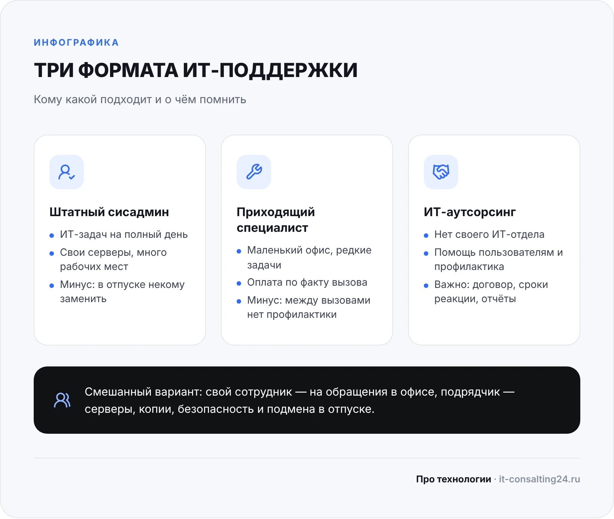
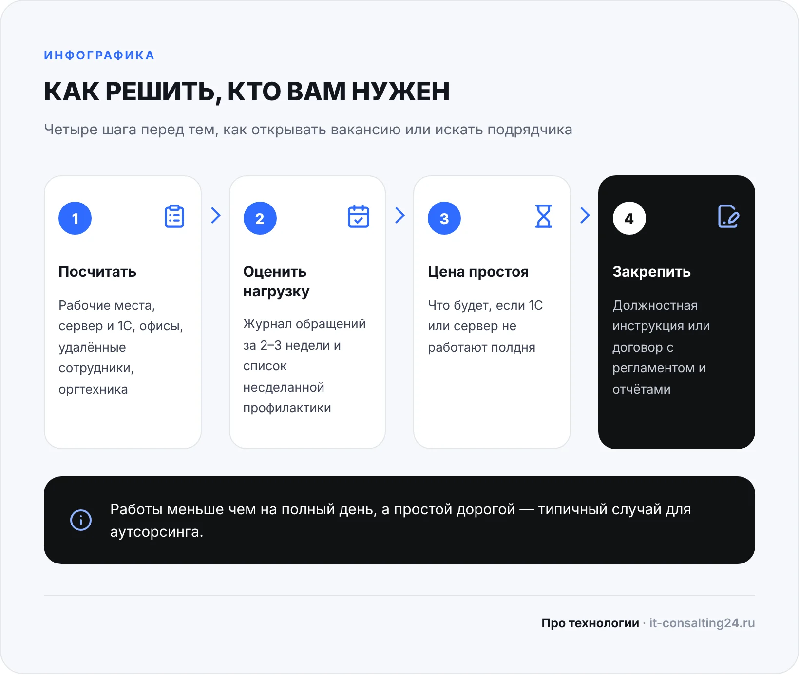

«Нам нужен системный администратор» — обычно это говорят после неприятного случая: встала 1С, не печатает единственный МФУ, пропала папка с договорами или новому сотруднику неделю не могут настроить почту. Желание понятное — найти человека, который будет за всё это отвечать. Но прежде чем открывать вакансию, стоит разобраться, какой объём работы на самом деле есть и в каком формате его выгоднее закрыть.
В статье — признаки, по которым видно, что компании нужен системный администратор, три формата работы (штатный сотрудник, приходящий специалист, ИТ-аутсорсинг), из чего складывается их стоимость, таблица типичных ситуаций и чек-лист того, что подготовить до начала работы. Материал рассчитан на руководителя небольшой компании, у которой нет своего ИТ-отдела.
Признаки, что компании нужен системный администратор
Если хотя бы два-три пункта из списка про вас — пора назначить ответственного за ИТ, неважно, будет это сотрудник или подрядчик:
- компьютерами «занимается» бухгалтер, менеджер или сам руководитель — в свободное от основной работы время;
- никто точно не знает, есть ли резервные копии 1С и документов и можно ли из них восстановиться;
- пароли от роутера, сервера, почты и сайта записаны у одного человека или не записаны вовсе;
- сбои повторяются: зависает 1С, отваливается Wi-Fi, принтер «теряется» в сети;
- уволенные сотрудники сохраняют доступ к почте, облаку или удалённому рабочему столу;
- компания растёт: появляются новые рабочие места, сервер, второй офис или удалённые сотрудники;
- простой из-за техники уже стоил вам сорванных отгрузок, отчётов или клиентов.
Обратите внимание: ни один из этих признаков не говорит, что нужен именно штатный сотрудник. Они говорят, что ИТ нужен хозяин. Формат — отдельный вопрос, и о нём ниже.
Какие задачи на самом деле придётся закрыть
Чтобы выбрать формат, полезно разделить ИТ-работу на две части. Первая — текущие обращения: «не печатает», «не открывается», «настройте нового сотрудника». Их видно, о них просят. Вторая — профилактика, которую никто не замечает, пока она делается: резервные копии и проверка восстановления, обновления, антивирус, права доступа, мониторинг сервера, учёт техники и лицензий, документация.
В небольших компаниях обычно путают объём первой части с потребностью в человеке на полный день. Обращений бывает немного, а профилактика требует не столько часов, сколько регулярности и знаний. Подробный список работ — в статье об обязанностях системного администратора в организации; здесь важно другое: оценить, сколько этой работы именно у вас.
Простой способ — за две-три недели записывать все ИТ-проблемы: что случилось, сколько ждали, кто чинил. Добавьте к списку то, что сейчас не делается вовсе (копии, обновления, учёт). Получится честная картина нагрузки.
Какой специалист вам нужен
Под словами «системный администратор» скрываются очень разные люди, и важно не ошибиться с уровнем:
- Специалист поддержки пользователей — настраивает компьютеры, программы, принтеры, помогает сотрудникам. Закрывает текущие обращения, но обычно не отвечает за сервер и безопасность.
- Системный администратор — отвечает за сервер, сеть, резервное копирование, учётные записи и права, безопасность. Именно его компетенции нужны, чтобы данные не пропали.
- Узкие специалисты — по 1С, сетям, информационной безопасности, видеонаблюдению. Небольшой компании они нужны эпизодически: при внедрении, переезде, сбое.
Типичная ловушка — нанять специалиста поддержки, а ждать от него уровня администратора. Пока всё работает, разницы не видно. Она проявляется, когда сервер не загрузился или в сеть проник шифровальщик.
Три варианта: штатный, приходящий или ИТ-аутсорсинг
| Формат | Кому подходит | Ограничения |
|---|---|---|
| Штатный системный администратор | Компаниям, где ИТ-задач на полный рабочий день: много рабочих мест, свои серверы, ежедневные обращения | Зарплата, налоги, рабочее место и обучение; в отпуске и на больничном его некому заменить; один человек редко силён во всём |
| Приходящий специалист (разовые вызовы) | Совсем небольшим офисам с простой техникой и редкими задачами | Работает по факту поломки: между вызовами за копиями, обновлениями и безопасностью никто не следит |
| ИТ-аутсорсинг (абонентское обслуживание) | Компаниям без ИТ-отдела, которым нужна и помощь пользователям, и профилактика | Нужен договор с понятным составом работ, сроками реакции и отчётами; часть задач решается удалённо |
Есть и смешанный вариант: свой сотрудник закрывает обращения на месте, а подрядчик берёт серверы, резервное копирование, безопасность и подменяет на время отпуска. Так часто делают компании, которые выросли из «одного айтишника».

Сколько стоит каждый вариант
Сравнивать стоит не зарплату с абонентской платой, а полную стоимость. У штатного сотрудника к зарплате добавляются налоги и взносы, рабочее место, лицензии на инструменты, обучение, а ещё время руководителя на поиск и контроль. Если человек один, нужно заложить и цену его отсутствия: на две-четыре недели отпуска ИТ остаётся без присмотра.
Стоимость аутсорсинга зависит от числа рабочих мест и серверов, количества офисов, нужного времени реакции и того, сколько выездов включено. Подробно о расчёте — в статье о стоимости ИТ-аутсорсинга.
Наши ориентиры: ИТ-аутсорсинг — от 15 000 ₽ в месяц, разовый вызов специалиста — от 1 500 ₽, диагностика бесплатно. Перед расчётом мы проводим бесплатный аудит за 1 день: смотрим технику, сервер, сеть и резервные копии и называем стоимость под вашу инфраструктуру.
Как принять решение за 4 шага
Чтобы выбор не был «на глазок», пройдите по шагам:
- Посчитайте хозяйство. Сколько рабочих мест, есть ли сервер и 1С, сколько офисов и удалённых сотрудников, какая оргтехника.
- Оцените нагрузку. Возьмите журнал обращений за две-три недели и список невыполняемой профилактики.
- Оцените цену простоя. Что будет, если 1С или сервер не работают полдня? Чем дороже простой, тем важнее быстрая реакция и замена специалиста.
- Выберите формат и закрепите его на бумаге. Для сотрудника — должностная инструкция, для подрядчика — договор с регламентом, сроками реакции и отчётами.
Если по итогам работы набирается меньше чем на полный день, а простой обходится дорого, — это типичный случай для аутсорсинга. Если задач много и нужен человек в офисе постоянно, — для штатного администратора, лучше в паре с подрядчиком на подмену.

Типичные ситуации: проблема → причина → что сделать
| Проблема | Причина | Что сделать |
|---|---|---|
| Сисадмин уволился, никто не знает паролей | Всё держалось на одном человеке, не было документации | Восстановить доступы, завести хранилище паролей и описание инфраструктуры с доступом у руководителя |
| Сотрудник «по совместительству» не успевает | ИТ-задачи выросли, а основная работа никуда не делась | Вернуть его к основным обязанностям, передать ИТ специалисту или подрядчику |
| Приходящий мастер чинит одно и то же | Устраняются последствия, а не причина; нет профилактики | Перейти на регулярное обслуживание с регламентом и отчётами |
| Пока админ в отпуске, всё стоит | Нет замены и инструкций | Договориться с подрядчиком о подмене, описать типовые действия |
| Непонятно, за что платим подрядчику | В договоре нет состава работ и отчётности | Прописать регламент, сроки реакции и ежемесячный отчёт |
| Штатный админ не справляется с сервером и безопасностью | Уровень специалиста ниже задач | Передать серверы и безопасность подрядчику, оставить сотруднику поддержку пользователей |
Ошибки при поиске системного администратора
- Нанимать «знакомого, который разбирается». Пока он один знает пароли, компания от него зависит.
- Не проверять уровень. Попросите кандидата или подрядчика рассказать, как он организует резервное копирование и как будет восстанавливать данные. Конкретный ответ говорит больше, чем список сертификатов.
- Не фиксировать задачи письменно. Без инструкции или договора спор «это не моя работа» неизбежен.
- Звать специалиста только при поломке. Ремонт после сбоя обычно дороже и дольше профилактики.
- Выбирать подрядчика только по цене. Смотрите на регламент, время реакции и отчёты. Критерии — в статье как выбрать ИТ-аутсорсинг.
Чек-лист: что подготовить до начала работы
Неважно, кого вы выберете, — эти вещи сэкономят новому специалисту дни, а вам деньги:
- список компьютеров, ноутбуков, принтеров и сетевого оборудования;
- пароли администратора от сервера, роутера, почты, сайта, облачных сервисов;
- данные провайдера интернета и договоры с поставщиками;
- список программ и лицензий, включая 1С и антивирус;
- где и как делаются резервные копии (если делаются);
- список сотрудников и их доступов, включая уволенных за последний год;
- перечень самых частых проблем и того, что для бизнеса критично в первую очередь.
Если чего-то из списка нет — не страшно: это первое, что должен восстановить и описать новый администратор. Мы делаем это в рамках аудита, а при подключении к обслуживанию компьютеров и серверов ведём документацию постоянно.
Частые вопросы
Нужен ли системный администратор, если в офисе 5–10 компьютеров?
Штатный сотрудник на полный день в таком офисе обычно загружен не полностью. Но кто-то должен отвечать за резервные копии, доступы и безопасность. Чаще всего это закрывают аутсорсингом или регулярными визитами специалиста по договору.
Можно ли совмещать штатного сисадмина и аутсорсинг?
Да. Сотрудник помогает пользователям на месте, а подрядчик берёт серверы, резервное копирование, безопасность и подменяет его в отпуске и на больничном.
Сколько стоит приходящий системный администратор?
Зависит от задачи. У нас разовый вызов — от 1 500 ₽, диагностика бесплатно, ИТ-аутсорсинг с регулярным обслуживанием — от 15 000 ₽ в месяц.
Может ли системный администратор работать удалённо?
Большую часть работы — да: настройка программ, учётные записи, обновления, контроль копий. Выезд нужен для работы с оборудованием. По Оренбургу мы выезжаем в день обращения, при срочной проблеме — в течение 2–3 часов.
Как перейти от штатного сисадмина к аутсорсингу без потерь?
Получите от сотрудника пароли и описание инфраструктуры, проведите аудит и предусмотрите короткий период, когда старый и новый специалисты работают параллельно. Мы проводим такой аудит бесплатно за 1 день.